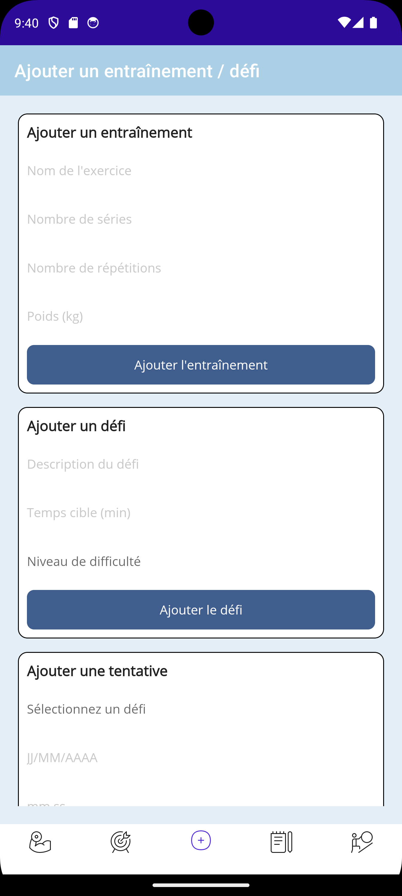
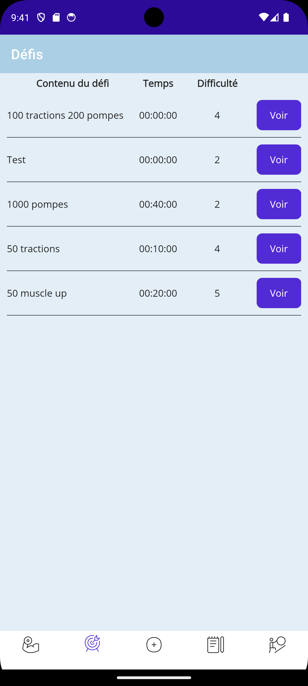
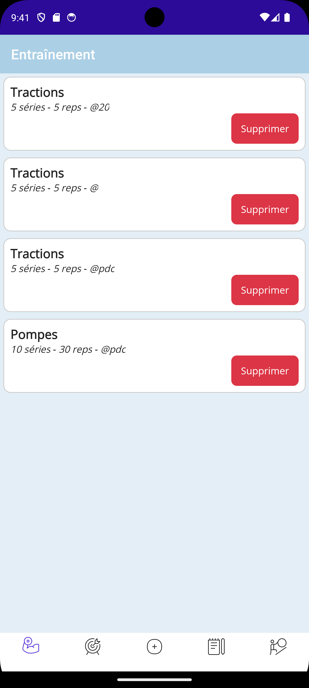
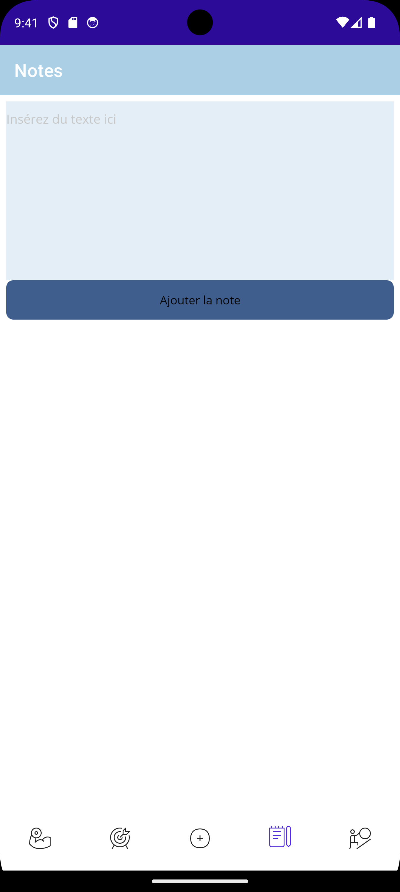
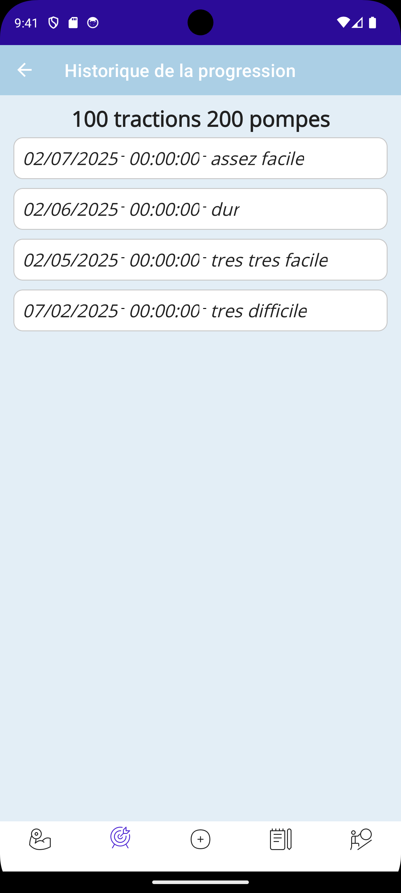

GSB Frais - Application de gestion des frais professionnels
Contexte
L'application Web GSB_AppliMVCPOO_VFinale est développée en PHP en utilisant la Programmation Orientée Objet (POO) et suit l'architecture MVC (Modèle-Vue-Contrôleur). Elle repose sur une base de données MySQL.
Son objectif est de gérer les frais de déplacement des collaborateurs de l'entreprise GSB :
- Les visiteurs médicaux peuvent saisir et suivre leurs dépenses professionnelles.
- Les comptables peuvent vérifier, modifier et valider ces fiches avant d'effectuer les paiements.
Le projet s'appuie sur une version existante déjà fonctionnelle pour les visiteurs. Nous avons pris en charge le développement de la partie comptable, ce qui a nécessité :
- L'ajout d'une nouvelle table dédiée dans la base de données.
- La création des modèles, contrôleurs et vues pour la gestion des fiches de frais côté comptable.
- La vérification des justificatifs et du kilométrage, la possibilité de corrections manuelles, et l'automatisation de la génération des fichiers de paiement mensuels.
Réalisation
- Authentification différenciée pour visiteurs et comptables
- Saisie, modification et suivi des frais (forfaitaires et hors forfait) pour les visiteurs
- Vérification, correction et validation des fiches de frais par les comptables
- Gestion des justificatifs et du kilométrage
- Automatisation de la génération des fichiers de paiement mensuels
Compétences mobilisées
- - Traiter des demandes concernant les applications (application créée pour répondre à mon besoin personnel de gérer mon sport au quotidien).
- - Analyser les objectifs et les modalités d’organisation d’un projet (réflexion sur le besoin et des fonctionnalités nécessaires (bdd, langage utilisé etc...)).
- - Déployer un service (déploiement de l'application sur un appareil android).
- - Mise en place de mon environnement d'apprentissage personnel (autoformation sur le framework).
Captures d'écran

Page d'ajout

Page de défis

Page de gestion des exercices

Page d'ajout de notes

Page d'historique des défis réalisés